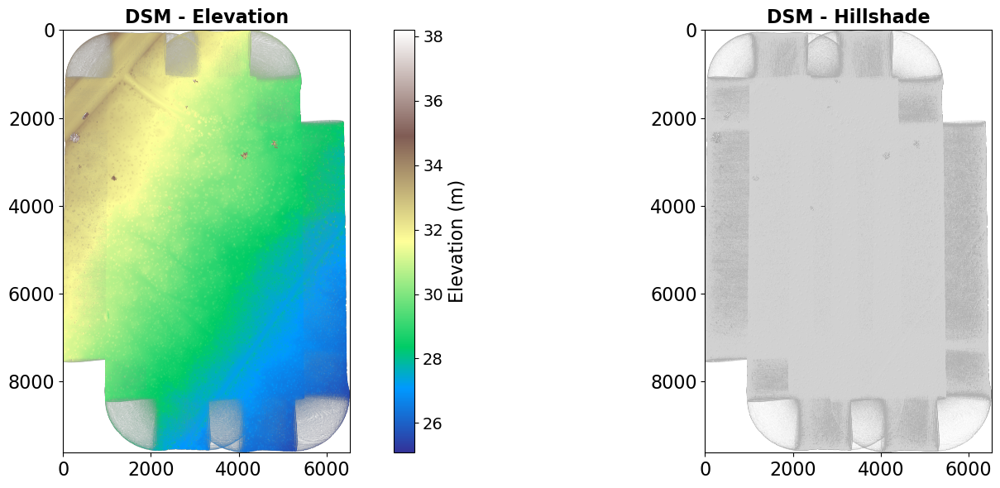
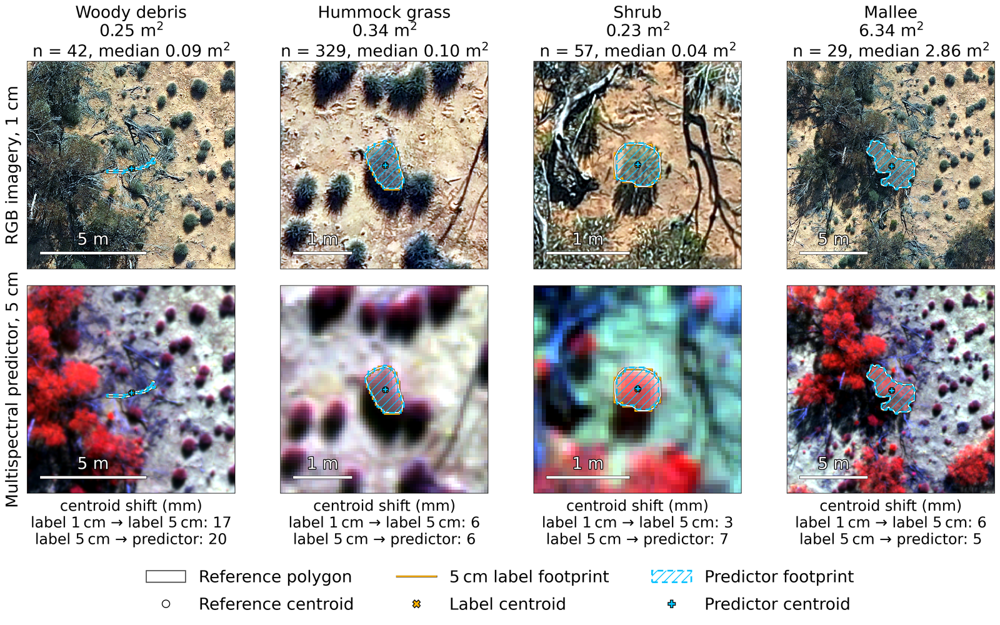
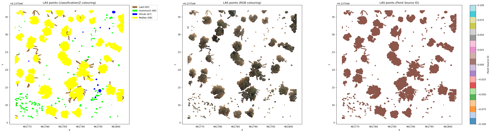
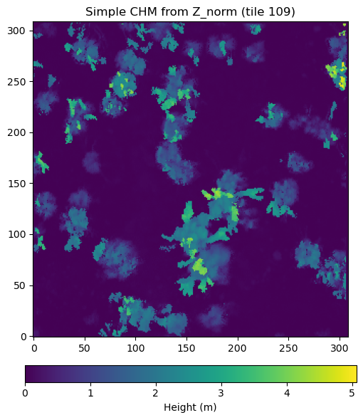
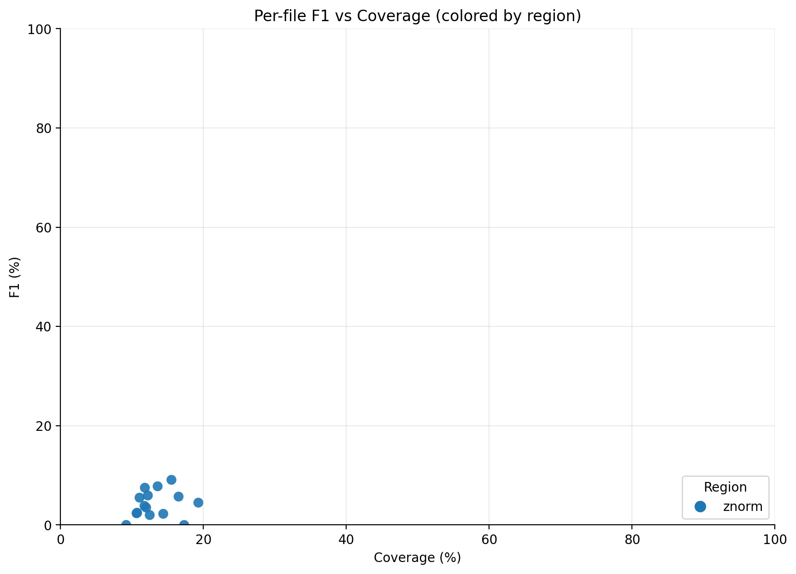

Prepare spatial data for analysis
These guides cover the first five phases and model experiments of fvcStructureRangeland3D, the workflow named in the preprint. Each phase describes the required inputs, commands and products; the linked handoff documents contain additional configuration details.
Contributions of the preprint
The preprint From 2D labels to 3D structure: Scalable label transfer and benchmarking of 3D vegetation models in rangeland ecosystems presents two contributions:
Supervisors: Arko Lucieer, Darren Turner, Johan Barthelemy and Teja Kattenborn.
Submitted to the ISPRS Open Journal of Photogrammetry and Remote Sensing, special issue: “Advanced Uncrewed Vehicles solutions: at the crossroad of Remote Sensing, Computer Vision and Robotics”.
A workflow transfers multispectral CNN vegetation labels to co-registered LiDAR, using height and object consistency to create labelled 3D point clouds without manual point-cloud annotation.
Explore label transferControlled ForestFormer3D experiments compare zero-shot transfer, few-shot fine-tuning and training from scratch. SegmentAnyTree provides a zero-shot instance baseline. Together they assess pretraining, adaptation and vegetation density across forest and Calperum rangeland sites.
Explore experimentsData products and acknowledgements
We thank Megan Lewis for her expertise and contributions in rangeland remote sensing and ecology, including her contribution to the reference-labelling dataset. We also acknowledge the Terrestrial Ecosystem Research Network (TERN), particularly its Ecosystem Surveillance team and Landscapes program. We thank Ben Sparrow, Poornima Sivanandam and Juan Carlos Montes-Herrera for drone operation and data processing, and the Australian Landscape Trust's Calperum Station managers for access to the study sites.
The paper's manual labels and UAS imagery are available in Sotomayor et al. (2025), Fractional Vegetation Cover Mapping, Zenodo. The dataset credits TERN Landscapes and TERN Surveillance Monitoring for RGB and multispectral orthomosaic processing, and acknowledges contributors to reference labelling. See the record for the full creator list, citation and licence. The forest benchmark uses FOR-instanceV2.
We also acknowledge the developers of ForestFormer3D (Xiang et al., 2025) and SegmentAnyTree (Wielgosz et al., 2024) for the models used in the experiments.
The examples below run locally; this page does not execute processing in the browser. Metadata describes documented inputs, defaults or examples—not values read from your files. Record your own CRS, grids, parameters and outputs. The saved figures retain their original notebook color maps, which may not be accessible to everyone with color-vision deficiencies.
Set up the environment
Run these commands in a terminal, one step at a time. They work in Linux/WSL and Windows PowerShell. Use the same environment for setup and processing.
Copy buttons appear when your browser permits clipboard access; otherwise select the command text manually.
1. Check the prerequisites
Install Git and uv if needed, then check that both are available:
git --versionuv --version2. Get the repository
Clone it once in the directory where you want to keep the project:
git clone https://github.com/LNSOTOM/fvc_structure.gitEnter the repository. If you already cloned it, start here from its parent directory instead.
cd fvc_structure3. Create and check the Python environment
From the repository root, install the locked Python dependencies for Phases 1 and 2. The project requires Python 3.10 or 3.11; uv can obtain a compatible interpreter if needed.
uv syncCheck that Python starts and the processing libraries import:
uv run python --versionuv run python -c "import numpy, rasterio, scipy, skimage, laspy, yaml; print('Dependencies OK')"Continue when the first command reports Python 3.10 or 3.11 and the second prints Dependencies OK.
4. Check PDAL for Phase 1
DSM generation also needs the external pdal executable. Install it separately using the Phase 1 setup guide, then check that it is on the terminal's PATH:
pdal --versionIf the command is not found, install PDAL and verify it again in the same terminal before running Phase 1. Phase 2's scripts do not require the PDAL executable.
Build a digital surface model
Generate a raster of maximum LiDAR elevation using PDAL. The DSM can then be used as the moving surface in Phase 2.
A georeferenced LAS/LAZ point cloud and a writable output location.
A DSM GeoTIFF, optionally accompanied by a STAC sidecar. The example uses a 0.03 m grid.
Processing steps
- Configure the point cloud and DSM output. Diagram: choose input and output paths.
- Estimate the DSM grid, then run PDAL. Diagram: estimate the grid before generating the DSM.
- Inspect the raster and optional metadata.

Historical DD0011 output; DSM notebook. Select the image to enlarge.

Repository contents
dsm_lidar.py— DSM generatorconfigs/— job templatenotebooks/— examples and visualisation
1. Configure a job
From the repository root, copy the template and edit its job paths and metadata:
cp phase_1_image_processing/configs/dsm_job.example.yml phase_1_image_processing/configs/dsm_job.local.yml2. Estimate and run
uv run python phase_1_image_processing/dsm_lidar.py --config phase_1_image_processing/configs/dsm_job.local.yml --estimate-onlyuv run python phase_1_image_processing/dsm_lidar.py --config phase_1_image_processing/configs/dsm_job.local.ymlInspect the resulting raster's extent, CRS, resolution and NoData before continuing. The optional sequential batch example in the notebook reads the batch section of the local config; the CLI processes the single job.
Example output: DSM elevation and hillshade
Align LiDAR to the imagery DSM
Resample the LiDAR DSM onto the imagery grid, compute a GeFolki optical-flow field, then apply the field to the original point cloud.
An imagery DSM, a LiDAR DSM and its original georeferenced LAS/LAZ file. Check their CRS and spatial overlap.
A resampled and registered DSM, two flow arrays and an aligned point cloud. The L2 flow script also writes a residual raster.
Processing steps
- Check CRS and configure the site and LiDAR pass. Diagram: verify coordinates and select the pass.
- Resample the LiDAR DSM onto the imagery grid. Diagram: place both surfaces on the same grid.
- Compute optical flow and apply it to the point cloud. Diagram: apply GeFolki displacements.
- Inspect alignment and retained point count.
 Historical DD0001 diagnostic; preprocessing notebook. Select the image to enlarge.
Historical DD0001 diagnostic; preprocessing notebook. Select the image to enlarge.
Repository contents
configs/— job templatestep_0_checks/— CRS checksgefolki/python_myscripts/— processing scriptsgefolki/notebooks/— examples and validationgefolki/python/— vendored GeFolki library
1. Configure one site and pass
cp phase_2_lidar_coregistration/configs/coregistration_job.example.yml phase_2_lidar_coregistration/configs/coregistration_job.local.ymlEdit the preprocess, flow and align sections. Connect the output paths of each step to the input paths of the next. The supplied template uses L2 flow parameters; use the documented L1 parameters for L1 data.
2. Run the steps
This example uses the L2 scripts. For L1 data, choose the corresponding _l1.py scripts instead.
uv run python phase_2_lidar_coregistration/gefolki/python_myscripts/gefolki_preprocess.py --config phase_2_lidar_coregistration/configs/coregistration_job.local.ymluv run python phase_2_lidar_coregistration/gefolki/python_myscripts/gefolki_flow_l2.py --config phase_2_lidar_coregistration/configs/coregistration_job.local.ymluv run python phase_2_lidar_coregistration/gefolki/python_myscripts/align_lidar_with_flow_l2.py --config phase_2_lidar_coregistration/configs/coregistration_job.local.yml3. Inspect the alignment
Review the registered surface, flow direction and alignment statistics for your site. The scripts show diagnostic plots; the validation notebook provides a starting point for further checks.
Example output: DSM and displacement diagnostics
Prepare imagery tiles and structure labels
Clip annotated grid cells, select five multispectral bands and create structure labels using the historical 1 cm to 5 cm workflow.
An orthomosaic, annotated grid, FVC shapefiles and matching 1 cm reference tiles.
Five-band predictor tiles, classified polygons and label rasters at 1 cm and 5 cm.
Processing steps
- Tile the imagery using the annotated grid.
 Historical DD0011 raw tiles; tiling notebook. Select the image to enlarge.
Historical DD0011 raw tiles; tiling notebook. Select the image to enlarge.
- Stack the selected multispectral bands. Diagram: select the five predictor bands.
- Classify FVC polygons by structure. Diagram: assign structure IDs to annotations.
- Rasterize labels on the 1 cm reference grid. Diagram: use the matching 1 cm reference tile.
- Downsample labels to 5 cm and remap classes. Diagram: nearest-neighbour resampling and class remapping.
- Run label quality assessment separately.

Historical DD0001 tile 26 assessment; label QA notebook. Select the image to enlarge.

Repository contents
imagery_prep.py— preparation workflowconfigs/— job templatestep_1_orthomosaic_to_tiling/— original tiling examplesstep_2_structure_2D_labels/— original label examplesstep_3_label_quality/— label assessment
1. Set up Phase 3
Phase 3 needs a separate geospatial environment with GDAL, GeoPandas and Rasterio; the Phase 1–2 uv environment does not include them. Follow the Phase 3 setup guide, then activate it in your terminal.
2. Configure a job
From the repository root, copy the template and replace every path. Set the 1 cm reference directory and filename pattern to match your annotation tile IDs. Use new output directories.
cp phase_3_2D_imagery_prep/configs/imagery_prep_job.example.yml phase_3_2D_imagery_prep/configs/imagery_prep_job.local.yml3. Run the workflow
This command runs all five stages in order without pausing. Review the messages, including excluded or unrecognized classes, and inspect the outputs afterwards.
python phase_3_2D_imagery_prep/imagery_prep.py --config phase_3_2D_imagery_prep/configs/imagery_prep_job.local.yml --stage allTo inspect each stage before continuing, replace all in the command with tile, stack, classify, rasterize and downsample, running it once for each in that order. Existing outputs are not overwritten.
Example output: clipped imagery tiles
Example output: label-grid quality
These saved figures retain their original colours, which may not be accessible to everyone with colour-vision deficiencies. They illustrate different sites and do not establish the quality of a new run.
Prepare structure-classified point clouds
Transfer 2D structure labels to a LiDAR tile, calculate height above ground and fuse the labels into a 3D vegetation product.
An already ICP-registered LiDAR tile, matching predictor raster and Phase 3 structure mask.
Mask-classified, ground-only, height-normalized and vegetation-only fused LAS files.
Processing steps
- Check the ICP tile, mask and predictor alignment. Diagram: check CRS, extents and visual alignment.
- Transfer mask classes to the LiDAR points.

Historical DD0001 example; the mask notebook is configured for tile 109 but may fall back to another tile. Select the image to enlarge. - Extract ground points using CSF.
 Historical DD0001 tile 109: the middle panel shows ground classification. See the ground notebook; select the image to enlarge.
Historical DD0001 tile 109: the middle panel shows ground classification. See the ground notebook; select the image to enlarge.
- Calculate height above ground as
Z_norm.
Historical DD0001 tile 109 height model; fusion notebook. Select the image to enlarge. - Fuse structure labels and assign crown
treeIDs. Diagram: voxel transfer and crown-based refinement. - Inspect the outputs and their alignment. Diagram: check counts, classes, heights and tree IDs.


Repository contents
lidar_prep.py— single-tile workflowconfigs/— job templatestep_1_clipping/— mask transferstep_2_csf_znorm/— ground and height normalizationstep_3_structure_class/— 3D fusion
LAS attributes: historical tile 109 example
These are observations from two saved DD0001 files, tiles_multispectral.109.las (ICP input) and znorm_3Dlabels_109.las (historical structure-classified LAS). They are historical examples, not outputs generated by the commands on this page. Other LAS files may have different point formats and dimensions.
For illustration, the first point in each saved file has scaled XYZ 461802.19, 6237536.73, 64.24, intensity 2, return 1 of 2, and RGB 44032, 38144, 30720. Its ICP-file classification is 0; the classified-file point has classification 68, Z_norm approximately 4.184522 m and treeID 0. These values describe only those example records.
Inspect your own LAS header and dimensions
After the Phase 1–2 uv sync setup, replace PATH_TO_INPUT.las with your file path and run this from the repository root. It reads the header without loading the full point cloud; it does not modify the file. On Windows, use forward slashes in the path.
uv run python -c "import laspy; r=laspy.open('PATH_TO_INPUT.las'); h=r.header; print('LAS:', h.version, 'point format:', h.point_format.id, 'points:', h.point_count); print('CRS:', h.parse_crs()); print('scale:', h.scales, 'offset:', h.offsets); print('dimensions:', ', '.join(h.point_format.dimension_names)); print('extra dimensions:', ', '.join(h.point_format.extra_dimension_names) or 'none'); r.close()"A missing CRS may print None; verify it against the source documentation before processing. Inspect point values and class distributions separately, as this command lists dimensions rather than their values.
1. Set up Phase 4
Use a geospatial environment with PDAL, its Python bindings and the other dependencies listed in the Phase 4 setup guide. Activate it before running these commands.
2. Configure a tile
From the repository root, copy the template and replace every path with your own input tile, mask, predictor and new output paths.
cp phase_4_3D_lidar_prep/configs/lidar_prep_job.example.yml phase_4_3D_lidar_prep/configs/lidar_prep_job.local.yml3. Run the workflow
python phase_4_3D_lidar_prep/lidar_prep.py --config phase_4_3D_lidar_prep/configs/lidar_prep_job.local.yml --stage allTo inspect each stage before continuing, replace all with mask, ground, normalize and fuse, running once for each in order. Existing outputs are not overwritten.
Example output: height above ground
The saved figure retains its original colour map; check your own output with accessible visualizations and numerical summaries.
Prepare classified LiDAR for modelling
Convert one Phase 4 tile to local-coordinate PLY, retain its coordinate offset and check its labels before creating a model dataset.
A classified LAS tile with Z_norm and treeID.
A PLY file and an offset sidecar. Dataset splits, model arrays and training are separate steps.
Processing steps
- Inspect the Phase 4 tile and select a class profile.
Diagram: validate classifications,
Z_normandtreeID. - Convert labels and write the PLY. Diagram: the strict HSM profile; the historical profile also retains 64 and 65.
- Keep the offset and check coordinates and labels. Diagram: retain the original CRS separately; check point and class counts.
- Prepare and inspect model data separately.
 Historical DD0001 tile 106 NPY inspection from the export notebook. It is not produced by the PLY command below. Select the image to enlarge.
Historical DD0001 tile 106 NPY inspection from the export notebook. It is not produced by the PLY command below. Select the image to enlarge.
Repository contents
prepare_lidar.py— checked single-tile PLY preparationconfigs/— job templatelidar_preprocessing/— LAS-to-PLY packagenotebooks/— historical exports and quality checksForestFormer3D/— model dataset preparation and experiments
When five classes become three
The preprint's Sections 3.2 and 4.1 distinguish native growth-form labels used for 2D-to-3D transfer from the shared ground/wood/leaf formulation used in the modelling experiments. The table below separates that scientific interpretation from this repository's file encodings. Class numbers are specific to their columns.
In the paper, “ground”, “wood” and “leaf” are the shared forest-model categories used to interpret rangeland growth forms; they do not mean the labels literally describe bare soil, woody material or leaves. Phase 3 keeps five native classes, Phase 4 transfers and refines them, and model preparation/evaluation is where a three-class representation is needed. The Phase 5 PLY command itself retains the historical PLY IDs shown above.
three_class_hsm rejects LAS 64 and 65, so it cannot prepare forb-containing tiles. historical_five_class retains them, but does not itself produce paper-compatible model labels. The current ForestFormer exporter handles PLY sets 1/4/5 and 3/4/5 as 0/1/2, but leaves a mixed 1/3/4/5 set unchanged; it also leaves a single-class PLY set containing only 1 unchanged. Inspect the exported labels for every tile before training or evaluation.The base ForestFormer configuration names IDs 0/1/2 ground/wood/leaf, while the HSM configuration names them hummock/shrub/mallee. Some existing evaluation configurations instead map shrub to ground, contrary to the paper's shared formulation; for example, see medium-to-GWL and four-class evaluation. Check the exact config, masks, checkpoint and instance policy rather than assuming these configurations reproduce the paper. No class IDs or processing rules have been changed by this guide.
1. Set up Phase 5
Create and activate the separate Python environment described in the Phase 5 handoff. ForestFormer training requires additional dependencies.
2. Configure a tile
Copy the template from the repository root, edit the paths, and choose three_class_hsm or historical_five_class.
cp phase_5_3d_cnn_training/configs/lidar_to_ply.example.yml phase_5_3d_cnn_training/configs/lidar_to_ply.local.yml3. Prepare the PLY
python phase_5_3d_cnn_training/prepare_lidar.py --config phase_5_3d_cnn_training/configs/lidar_to_ply.local.ymlThe command reports excluded background and verifies the PLY, labels, heights and reconstructed coordinates. It refuses to overwrite an existing PLY or offset.
4. Check the three-class model handoff
For HSM tiles, LAS 66/67/68 become PLY 3/4/5. The current ForestFormer exporter maps those to 0/1/2: grass hummock/shrub/mallee in the HSM configuration. The paper interprets these as ground/wood/leaf respectively, and also maps forb to ground. Verify the dataset, exporter, instance policy and checkpoint before training. Follow the model experiment runbook for subsequent dataset and training steps.
Example output: model-array inspection
The historical figure retains its original colours, which may not be accessible to everyone with colour-vision deficiencies. Inspect your own classes and coordinates numerically as well.
From labelled tiles to model predictions
Phase 4 provides the structure-classified LAS and Phase 5 exports a labelled PLY and an XYZ offset. These are preparation products, not trained models or predictions. The two models have separate environments, data preparation and output formats.
Uses prepared point-cloud datasets for semantic and instance segmentation. In the paper it is evaluated in all three experiment families.
ForestFormer3D stepsGroups points into individual tree instances. In the paper it is a zero-shot instance-level reference, not the fine-tuned model in Experiments 2 and 3.
SegmentAnyTree stepsModel runbooks use Linux and NVIDIA GPU/Docker environments. Windows users can continue using the earlier Windows workflow and, where supported, use a separately configured WSL/Linux GPU environment for these model instructions; native Windows model execution is not established here. Check your own GPU, dependencies, datasets and checkpoints before running.
Explore the model results
Compare saved ForestFormer3D reference labels and predictions for the held-out forest scene and medium and low L1 tiles. The forest example is Experiment 1A with the forest-trained model; the rangeland examples are Experiment 2B final-epoch results: stage 1 for the medium site and stage 2 for the low site. The paper reports the strongest semantic performance at these stages for their respective rangeland sites; this does not establish a universally best checkpoint.
Drag the dividing line or use either slider to reveal semantic colours on the left and instance colours on the right. Drag elsewhere to rotate both views. The controls also work with a keyboard; hover over a point for its numeric labels.
Loading comparison data…
Point inspection: hover over either view.
The default semantic colours follow the paper's legends; an alternative colour-blind-friendly palette is available. Class names, counts and point inspection provide non-colour cues. Instance colours are separate, repeat and are assigned independently; do not infer a match from colour alone. Instance counts are unique assigned IDs in the saved PLY, not necessarily the paper's post-processed instance counts. Both views use the same deterministic sample of up to 60,000 points from the corresponding saved prediction PLY, rounded to 1 mm for display; the density setting selects a subset. Higher density may be slower. The plots use local coordinates and are illustrative, not the complete point clouds or a substitute for numerical evaluation. Rebuild information.
ForestFormer3D / Semantic and instance segmentation
Processing steps
- Check Phase 5 tiles and define the splits. Diagram: inspect class IDs and retain independent test scenes.
- Export the model dataset.
Historical DD0001 tile 106 dataset inspection, not a model prediction; select to enlarge.
- Evaluate a checkpoint or train a model. Diagram: choose zero-shot, fine-tuning or random initialization.
Files and setup
Phase 5 PLY + _offset.npy→forainetv2_instance_data/*_vert.npy,*_sem_label.npy,*_ins_label.npy,*_offsets.npyand bounding boxes.- Dataset creation also writes point/semantic/instance files and
forainetv2_oneformer3d_infos_*.pkl. - The current full-scene test path writes prediction PLY files with
semantic_pred,instance_pred,scoreand, when provided, ground-truth fields. Verify the selected model implementation and output directory. - Docker and dataset quick setup · Experiment runbook
Follow the quick setup to prepare the dataset first. The experiment runbook provides the split generation, preprocessing, training and evaluation commands; its paths, GPU IDs and checkpoints are examples to replace. The preprint reports final-epoch models as the primary comparison, while the runbook also illustrates other checkpoint selections: record the checkpoint actually evaluated.
SegmentAnyTree / Instance segmentation
Processing steps
- Prepare input tiles and reference IDs.
Diagram: reference
treeIDenables evaluation of predicted instances. - Run zero-shot inference and merge outputs. Diagram: group points with the selected pretrained model.
- Compare instances with reference crowns.

Historical medium-L1 offline metrics plot from the saved outputs, not a result generated by this page. Select to enlarge.

Files and setup
Phase 5 PLY→ inference and merge →final_results/RUN_ID/results/*.lazin the multi-GPU workflow.- Result attributes depend on the available inputs and merge;
PredInstance=0denotes an unassigned point in the merge output. Semantic fields are not the paper's reported SegmentAnyTree performance measure. - Multi-GPU inference and metrics runbook · Model setup
The saved scatter plot shows 15 medium-L1 files from an existing offline analysis; each point represents one file. Its F1 and coverage values depend on that run's inputs and evaluation settings and should not be assumed to reproduce the paper's reported results.
Compare transfer and training strategies
The paper compares forest and Calperum rangeland domains. The examples below describe the research design, not results produced by this page. For the primary experiments the paper uses L1 LiDAR; L2 is used for supplementary comparisons.
Experiment steps
- Experiment 1 / Zero-shot transfer. Diagram: inference without target-domain fine-tuning.
- Experiment 2 / Few-shot fine-tuning. Diagram: fine-tune ForestFormer3D with limited rangeland labels.
- Experiment 3 / Training from scratch. Diagram: compare training without forest-pretrained weights.